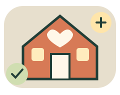

一起練習 · 不用搶快
親子相處練習室
先聽懂，再一起找做法。

今天一起練什麼？
給國小親子共玩的20個虛構情境，練習情緒、協商、協助、修復與尊重。不是評鑑好父母、好孩子的測驗。
- 情緒與界線
- 規則與協商
- 自主與協助
- 衝突與修復
- 隱私與尊重
先操作再確認，確認後才揭露解析與可能後續。不確定可先看解析；重試保留首次紀錄。題目與選項每輪換序，同輪不重複。低年級可由照顧者讀題。
這是情境練習，不是心理／醫療診斷、親職評鑑或急救能力認證。原創題目參考公開資料，不是官方題庫。作答只留在本分頁記憶體，重新整理即清空；無帳號、儲存、追蹤或上傳。
來源、適用範圍與設計說明五單元練習紀錄
第一次的選擇與重試分開保留；選得符合本題目標，不代表真實生活一定有相同結果。